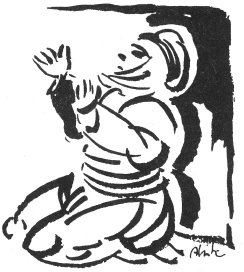

LADIFLARIN AĞIDI
Kırşehirin Kaman kazasından bir ailenin dört oğlu da asker oluyor ve Kars hezimetinde dördü de şehit düşüyor. Bu ağıt, anaları Emine tarafından yakılmıştır.
Ana ağlar bacı ağlar
Ağ gelinler gara başlar
Hep gapandı böyük evler
Goca galdı garıyınan
Yaz gelir de bilbil öter
Dağlar melil melil tüter
Has bahçada güller biter
Hayva turunç narıyınan
Ladıflar geliyo dense
Mücdecisi eve gelse
Halil Kâham gıra binse
Sülemenim doruyunan
Goyun geldi sürüyünen
Evler yandı yeriyinen
Hep melekler harbe getmiş
Al bayraklı periyinen
Gars'da gavga guruluyo
Ladıf ora deriliyo
Tırampatlar vuruluyo
Mızıkalı boruyunan
Eminem derkine aman
Üstümüzden gaksa duman
Bizim vatanımız Gaman
Mor sümbüllü goruyunan
Ladıf Redif.
Ben bu ağıdı derlediğimde ağıdın yakıldığı yerin Kırşehirin Kaman ilçesi olduğunu sanıyordum. Sonradan bana ağıdın yakılış yerinin Bahçe ilçesinin Kaman köyü olduğu söylendi. Bir iki varyant da o yörelerde derlendi, yayınlandı. Onlar da kirap olarak çıkarsa, bu ağıt tamamlanmış olur.
